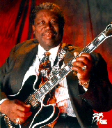
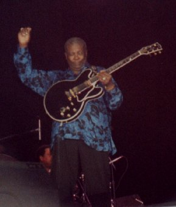

B.B.King


Интервью B.B.King. Текст
пресс-конференции на джаз-фестивале в Монтре в 1995
году. Предоставил Андрей Евдокимов.
Фотографии фестиваля
в Кэнзас-Сити, август 1996г.
Рекомендуемые записи:
- B.B. King Live at the Apollo (1991, GRP) - B.B., как обычно,
великолепен на концертах
- Blues Summit (MCA, 1993) - B.B. и его друзья, включая
Buddy Guy, Lohn Lee Hooker, Albert Collins and Katie Webster
- B.B. King - King of the Blues (1992, MCA) - Набор из 4-х CD с
лучшими записями B.B.